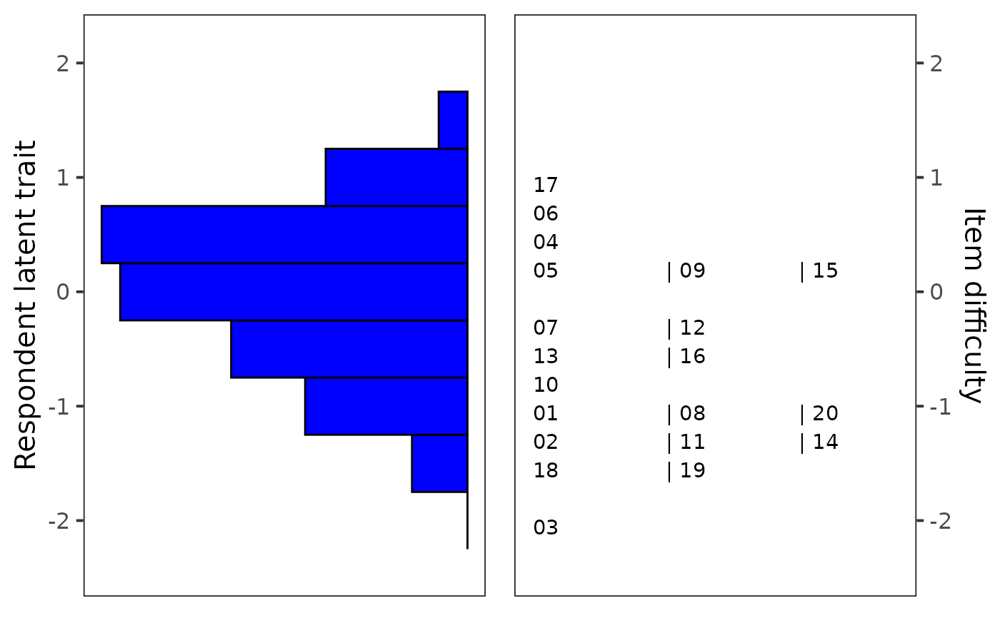
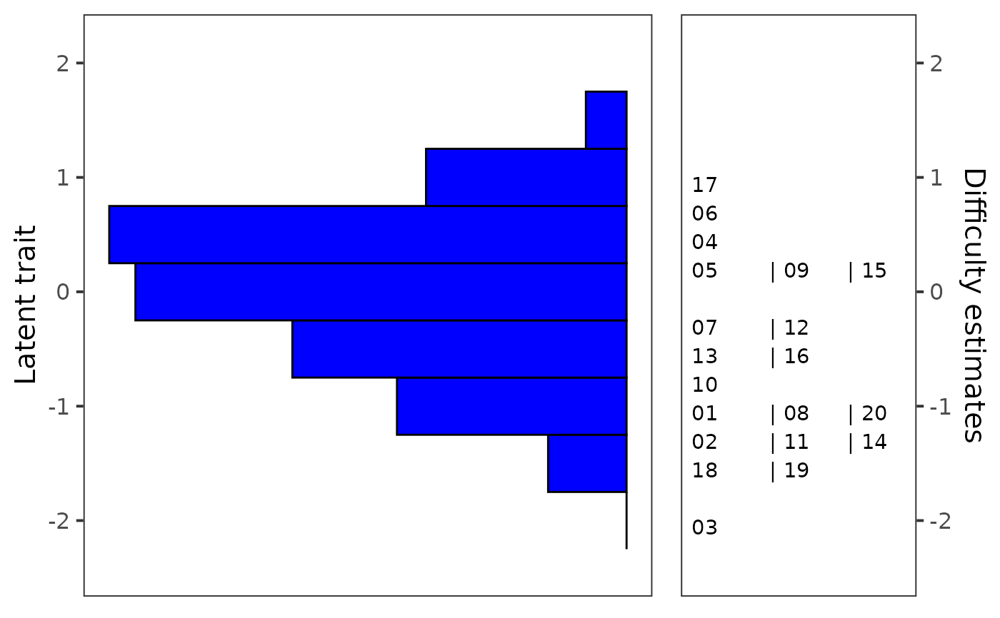

This function allows to generate Wright map (also called
person-item map) using ggplot() function from the ggplot2
package. Wright map is used to jointly display histogram of abilities
(or other measured trait) and item difficulty parameters.
Function takes pre-estimated parameter estimates, such as those obtained
from an IRT model.
Usage
ggWrightMap(
theta,
b,
binwidth = 0.5,
color = "blue",
size = 15,
item.names,
ylab.theta = "Respondent latent trait",
ylab.b = "Item difficulty",
rel_widths = c(1, 1)
)Arguments
- theta
numeric: vector of ability estimates.
- b
numeric: vector of difficulty estimates.
- binwidth
numeric: the width of the bins of histogram.
- color
character: color of histogram.
- size
text size in pts.
- item.names
names of items to be displayed.
- ylab.theta
character: description of y-axis for the histogram.
- ylab.b
character: description of y-axis for the plot of difficulty estimates.
- rel_widths
numeric: vector of length 2 specifying ratio of "facet's" widths.
Author
Adela Hladka
Institute of Computer Science of the Czech Academy of Sciences
hladka@cs.cas.cz
Jan Netik
Institute of Computer Science of the Czech Academy of Sciences
netik@cs.cas.cz
Patricia Martinkova
Institute of Computer Science of the Czech Academy of Sciences
martinkova@cs.cas.cz
Examples
library(mirt)
#> Loading required package: stats4
#> Loading required package: lattice
# fit Rasch model with the mirt package
fit <- mirt(HCI[, 1:20], model = 1, itemtype = "Rasch")
#>
Iteration: 1, Log-Lik: -7630.737, Max-Change: 0.16725
Iteration: 2, Log-Lik: -7621.806, Max-Change: 0.07642
Iteration: 3, Log-Lik: -7619.384, Max-Change: 0.03841
Iteration: 4, Log-Lik: -7618.624, Max-Change: 0.02089
Iteration: 5, Log-Lik: -7618.370, Max-Change: 0.01160
Iteration: 6, Log-Lik: -7618.277, Max-Change: 0.00668
Iteration: 7, Log-Lik: -7618.233, Max-Change: 0.00423
Iteration: 8, Log-Lik: -7618.221, Max-Change: 0.00228
Iteration: 9, Log-Lik: -7618.216, Max-Change: 0.00135
Iteration: 10, Log-Lik: -7618.214, Max-Change: 0.00091
Iteration: 11, Log-Lik: -7618.213, Max-Change: 0.00047
Iteration: 12, Log-Lik: -7618.213, Max-Change: 0.00029
Iteration: 13, Log-Lik: -7618.213, Max-Change: 0.00018
Iteration: 14, Log-Lik: -7618.213, Max-Change: 0.00010
Iteration: 15, Log-Lik: -7618.213, Max-Change: 0.00005
# factor scores
theta <- as.vector(fscores(fit))
# difficulty estimates using IRT parametrization
b <- coef(fit, simplify = TRUE, IRTpars = TRUE)$items[, "b"]
# Wright map
ggWrightMap(theta, b)

# Wright map with modified item names
item.names <- paste("Item", 1:20)
ggWrightMap(theta, b, item.names = item.names)
# Wright map with modified descriptions of y-axis and relative widths of plots
ggWrightMap(theta, b,
ylab.theta = "Latent trait", ylab.b = "Difficulty estimates",
rel_widths = c(2, 1)
)
